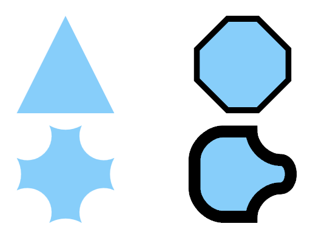

Shapes
A Shape is a basic 2D drawing that combines a Geometry with a Pen (for stroking) and Brush (for filling). Shape derives from FrameworkElement so it can be directly placed in a user interface without custom code or a complex hierarchy of objects. Shape objects share the following common properties.
- Fill: describes how the interior of the shape is painted.
- Stroke: describes how the shape's outline is painted.
- StrokeThickness: describes the thickness of the shape's outline.
- Strecth: describes how the shape fills the available space in its container.
More information about shapes can be found in the shapes tutorial
Noesis GUI Framework implements the following Shape derived classes among those provided by Blend:

It also implements Path elements create using the Pen (P) or Pencil (Y) tools. In fact, every shape can be converted to shape in Blend. This made possible to really create any shape and use it within NoesisGUI.
Rectangle
Represents a rectangular graphical element in the UI logical tree. It defines its own RadiusX and RadiusY properties that enable you to give it rounded corners.

Ellipse
An Ellipse is a graphical element that simply fills its rectangular available space with the largest possible elliptical shape.

Line
Line defines four properties called X1, Y1, X2, and Y2 that represent a line segment connecting points (x1,y1) and (x2,y2). The values of Line's properties are not absolute coordinates, they are relative to the space given to the Line element by the layout system.
Path
Path adds a single Data property to Shape, which can be set to an instance of any Geometry. The Data property can also be filled with a string that uses the Path Markup Syntax to specify complex geometries in a compact way. Therefore, Path turns out to be the easiest (and most fully featured) way to embed an arbitrary geometry directly into a user interface. All the other shapes can be alternatively represented with the general purpose Path.
